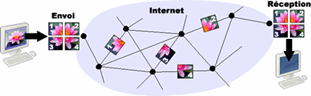
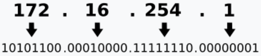
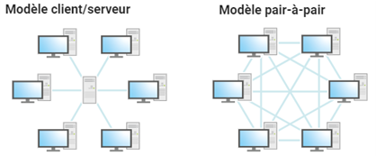

Introduction
Internet est un réseau d'ordinateurs qui communiquent entre eux. Il permet à de nombreux services de fonctionner, notamment le web, le courrier électronique et le transfert de fichiers.
I La circulation des données sur Internet
Au cœur d'internet, ce sont majoritairement des câbles sous-marins transocéaniques qui font passer les données sur des fibres optiques.
Les données sont découpées en paquets d'une taille maximale de 1500 octets puis ils sont acheminés séparément. Ils n'empruntent pas nécessairement la même route puis ils sont réordonnés. Ainsi, s'il y a un problème réseau, seuls les paquets perdus sont rechargés.
Des machines, appelées routeurs guident ces paquets à travers le réseau jusqu'à leur destinataire où ils sont réassemblés. Le routeur détermine le meilleur chemin en fonction de l'encombrement du réseau. Lorsque les paquets ont passé trop de temps sur internet, ils sont détruits par la machine qui détecte le dépassement. Les données sont transportées sur Internet grâce à un ensemble de règles de communication appelé protocole TCP/IP

II L'annuaire d'Internet
Une adresse IP, une série de chiffres, correspond à une adresse symbolique, sous forme textuelle et vice-versa. La correspondance entre adresses IP et symbolique se trouve dans l'annuaire DNS, un ensemble de données réparties sur des serveurs dans tout le réseau.
Les adresses IPv4 sont constituées de quatre octets.

=> tous les nombres sont compris entre 0 et 255.
III Les réseaux pairs à pairs
Dans un réseau pair-à-pair (P2P), les machines émettent et répondent à des requêtes d'autres machines : elles sont à la fois client et serveur. Le P2P est parfois utilisé pour échanger des fichiers de manière illégale (films, musique).

Le modèle TCP/IP
Application : c'est la couche supérieure
le protocole http pour aller sur le web ;
tls pour la sécurité ;
smtp, pop, imap pour les courriels ;
ftp pour les partages de fichiers.
Transport : Cette couche effectue le transport des données.
le protocole TCP : le plus utilisé car fiable.
le protocole UDP : plus rapide que le TCP mais il ne
vérifie pas si le paquet envoyé a bien atteint sa destination.
Réseau : elle indique les adresses IP source et de
destination à utiliser pour effectuer le transport de données.
Accès au réseau : c'est la couche la plus basse. Elle définit la manière dont les données sont envoyées physiquement via le réseau.
Ethernet, Wifi, Bluetooth.